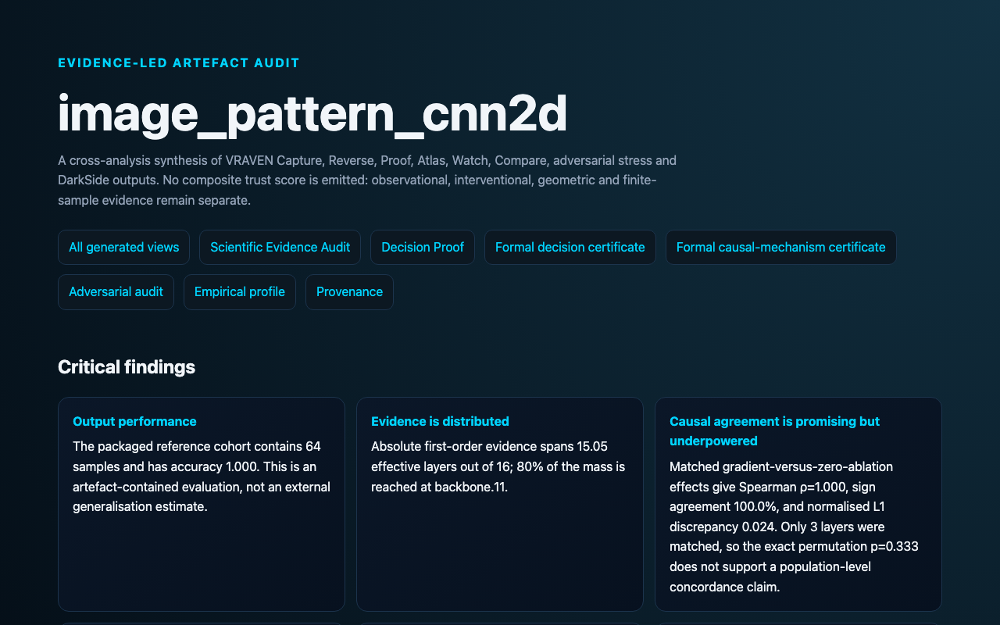

Status · 1 of 1
Scientific Synthesis
What can be concluded from the complete run, and what remains unresolved?


What it shows
A run-level synthesis of successful, skipped, and bounded claims.
Claim boundary
The synthesis inherits the limitations of every included analysis and must be read with its status notes.
Run the complete fixture
This one command recreates the report family using a small local model bundle.
python3 scripts/run_vraven_artifact.py Models/image_pattern_cnn2dGenerate this view
pipeline.write_scientific_synthesis(output_path="SCIENTIFIC_SYNTHESIS.html")InputModel bundle, one reference input, selected target
Display mode
publication_lightEvidence levelSynthesis of mixed evidence
Machine output
SCIENTIFIC_SYNTHESIS.htmlRelated APIvraven.decompiler.ReverseEngineeringPipeline
Fixture
image_pattern_cnn2dHow to read the result
- Start with the title and target metadata in the generated report.
- Read the strongest structures first, then inspect weaker or opposing evidence.
- Check the stated evidence level and status before treating a relationship as causal or formal.
- Retain the trace, model version, preprocessing, and VRAVEN version with any published claim.
Reproducibility noteThe screenshot is public documentation evidence. The source run remains local-first; raw provenance files are not published because they can contain machine paths.
Start of familyOutput index →